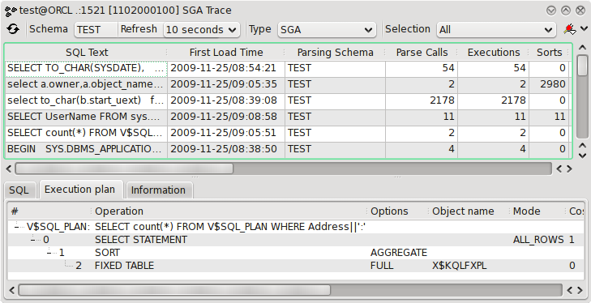

4.11 SGA Trace
This tool is used investigate the statements available in the SGA.

The session tool consists of a toolbar, a list of SGA statements ( see sgastatement ) and finally at the bottom a SGA statement view.
Toolbar
The toolbar contain the following controls.
- Update
- Update the view from the database.
- Schema
- The user schema to extract statements for.
- Refresh time
- A list where you can select the interval between automatic updates.
- Type
- What type of statements you want to examine. Can either be SGA to investigate all entries of the SGA or Long operations to check long operations in the database (Databases must have timed statistics enabled to generate entries for long operations).
- Change connection
- Change the connection to administrate storage for.
Don't forget you can sort the view by selecting a column header in the SGA list.